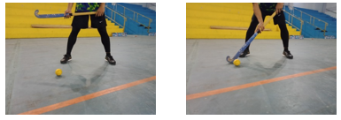
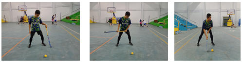
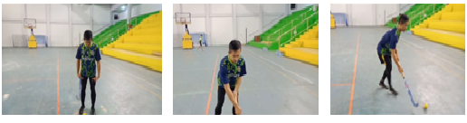
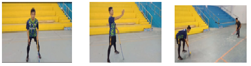
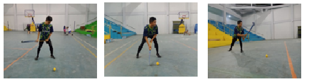
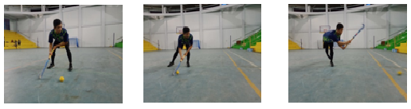
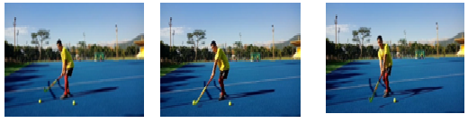
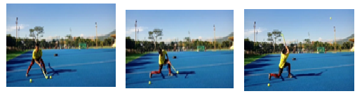
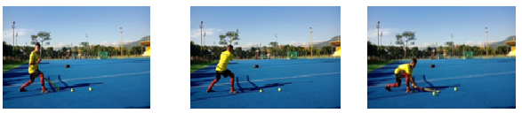
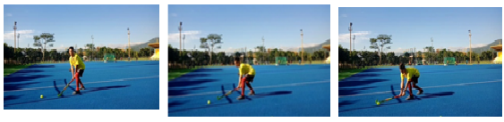

a. The Grip (cara memegang stick)
Cara memegang stick merupakan hal yang paling penting harus dikuasai oleh pemain pemula. Untuk tahap selanjutnya atlet akan bisa mempelajari teknik dasar hoki.
Teknik cara melakukan pegangan stick :
- 1. Stick dipegang dengan kedua tangan.
- 2. Tangan kiri memegang bagian bawah ujung stick.
Pada umumnya tangan kiri Tangan membentuk huruf V dibawah ujung stick, atau boleh juga kira-kira 10cm dari ujung stick, disesuaikan dengan tinggi badan pemain. Tangan yang membentuk huruf V tersebut harus segaris dengan bagian kepala stick. - 3. Tangan kanan berada sedikit dibawah atau rapat dengan tangan kiri dengan posisi V yang sama dan memegang stick dengan erat.
b. The Stance
Sama seperti cabang olahraga lainnya, jika bola sedang dikuasai lawan dan berada dekat dengan kita, maka kita harus selalu dalam keadaan siap.
Tenkik melakukan stance :
- 1. Kedua kaki dibuka selebar bahu dan lutut ditekuk.
- 2. Badan sedikit membungkuk ke depan serta pandangan selalu mengikuti jalannya bola.
- 3. Kedua tangan memegang stick dan selalu siap untuk melakukan stop bola ataupun merebut bola dari lawan.
c. Dribbling
Pengertian dribble adalah berlari lurus ataupun memebelok sambil menguasai bola. Dribble dapat digunakan untuk lari menguasai bola, menarik lawan dari posisinya, mengecoh dan melewati lawan, dan untuk mendapatkan ruang gerak untuk melakukan operan/tembakan.
Teknik melakukan Dribble :
- 1. Posisi kaki.
Dalam posisi lari yang normal, akan tetapi selalu siap untuk meliukkan badan ke samping kiri/kanan atau mengubah kecepatan lari bila perlu. Untuk itu gerakan kaki (foot work) yang baik akan sangat menunjang. - 2. Posisi badan.
Lebih bungkuk dari posisi lari biasa, tetapi harus selalu dalam keadaan seimbang dan rileks, dengan lengan relatif lurus, menguasai bola dengan baik. - 3. Posisi tangan.
Tangan kiri memegang stick dibagian ujung stick, seperti pada pegangan yang normal, akan tetapi tangan kanan harus sedikit ke bawah untuk mendapatkan kontrol yang maksimum. Untuk lebih membantu dalam mengendalikan stick, telunjuk tangan kanan diluruskan dan menempel badan stick. - 4. Pandangan.
Pandangan harus selalu ke depan mengikuti jalannya bola sekaligus juga melihat keberadaan kawan atau lawan disekitarnya.
d. Stopping
Pada umumnya pemain menghentikan bola dengan menggunakan stick yang di pegang dengan dua tangan, jikalau terpaksa dapat dilakukan dengan satu tangan.
Teknik melakukan stop ball :
- 1. Posisi kaki.
Menghadap ke depan, kedua kaki terbuka selebar bahu. Lutut agak ditekuk dan sikap badan dalam keadaan siap. Berat badan didistribusikan ke kedua kaki. - 2. Posisi tangan.
Tangan kiri memegang stick di bagian ujungnya atau agak ke bawah sedikit. Tangan kanan memegang bagian tengah dari stick, dengan pegangan yang santai, dengan maksud agar dapat mematahkan kecepatan bola sehingga bola tidak memantul. - 3. Posisi badan.
Badan rileks dan agak membungkuk ke depan, pandangan harus selalu mengikuti jalannya bola. Dengan segera menempatkan diri di garis luncur bola dan diatas stick, saat kontak dengan bola. - 4. Posisi stick.
Pada saat terjadi kontak dengan bola, kepala stick harus menyentuk lapangan (saat menerima bola yang menggelinding). Kemudian condongkan ujung stick ke arah datangnya bola, dengan maksud agar bola tidak naik ke atas ke arah badan penerima bola.
e. Pushing
Teknik mendorong dapat digunakan untuk memberikan umpan ataupun untuk menembak ke gawang, sangatlah tepat digunakan untuk operan jarak jauh. Meskipun ada kekurangan kekuatan pada sebuah pukulan, seorang atlet dapat dengan mudah melakukan push dengan menggunakan teknik yang benar.
TTeknik melakukan push :
- 1. Posisi bola.
40 – 50cm di depan kaki kiri. - 2. Posisi kaki
Kaki kiri di depan kaki kanan dan keduanya condong ke depan. Lutut agak dibengkokan. - 3. Posisi tangan.
Tangan kiri memegang stick dibagian ujung stick, seperti pada pegangan yang normal, akan tetapi tangan kanan harus sedikit ke bawah untuk mendapatkan kontrol yang maksimum. Untuk lebih membantu dalam mengendalikan stick, telunjuk tangan kanan diluruskan dan menempel badan stick. - 4. Posisi badan.
Condongkan badan ke depan, mulai dari panggul dan gerakan / tempatkan kepala sedemikian rupa sehingga berada segaris diatas bola. Saat melakukan push, putarkan badan sehingga bahu kanan bergerak menghadap ke muka ke arah sasaran. - 5. Perkenaan bola.
Diawali dari stick yang menempel dengan bola, dan kemudian stick menyusur lapangan selama mungkin. Lengan bawah dari tangan kanan menentukan tenaga dorongan, dibantu dorongan dari kaki kanan. Sedangkan tangan kiri membantu mengontrol stick, menarik stick ke belakang saat tangan kanan melakukan push. Setelah push, kepala stick harus tetap vertikal dan sebagai gerakan lanjutan, stick menunjuk mengikuti arah jalannya bola, sehingga bola akan bergerak menyusur lapangan.
f. Shooting
Shooting merupakan gerakan menembak ke gawang lawan agar terciptanya sebuah gol.
Teknik melakukan shoot :
- 1. Kaki dibuka selebar bahu dan lutut ditekuk.
- 2. Bola diletakkan di depan kaki.
- 3. Kemudian dorong bola boleh arah lurus ke bawah maupun ke atas atau ke arah yang sulit dijangkau oleh penjaga gawang.
g. Hitting
Salah satu keterampilan dasar yang paling penting dalam permainan hoki adalah keterampilan menggerakan / mengarahkan bola ke segala penjuru lapangan dengan cepat dan keras tepat pada sasaran.
Teknik melakukan Hitting :
- 1. Posisi kaki.
Kedua kaki terbuka selebar bahu dan lutut sedikit dibengkokan. - 2. Posisi tangan.
Tangan kiri memegang stick 1 inci dibawah ujung stick dan tangan kanan tepat dibawah tangan kiri. - 3. Letak bola.
Kira-kira satu langkah (40 – 50cm) di depan kaki kiri. - 4. Stick.
Condongkan badan ke depan, mulai dari panggul dan gerakan / tempatkan kepala sedemikian rupa sehingga berada segaris diatas bola. Saat melakukan push, putarkan badan sehingga bahu kanan bergerak menghadap ke muka ke arah sasaranSaat mengangkat stick ke belakang, berat badan berada di kaki kanan. Kemudian saat mengayunkan stick, kedua kaki melakukan gerakan memutar (pivot) menghadap ke arah sasaran dengan ujung kaki sebagai porosnya, dibarengi pula dengan memindahkan berat badan ke kiri. Saat stick menyentuh bagian belakang dari bola, kedua tangan harus memperkeras pegangan (grip). Kemudian sebagai gerakan lanjutan, stick harus mengarah ke depan ke arah sasaran.
h. Scoop
Jika pemain bertahan terkurung oleh para penyerang dan merasa tidak mungkin untuk menembus hadangan pemain lawan, salah satu cara melewatkan bola adalah dengan teknik ini. Dengan teknik scoop pemain dengan sengaja menaikkan bola melewati atas kepala lawan ke arah bagian lapangan yang kosong yang kemudian disambut oleh teman seregunya.
Yang perlu diperhatikan pula, pada saat melakukan scoop pemain lawan berada di luar jarak permainan (playing distance) yaitu 5 yard (4,5 meter). Jika pemain melakukan scoop pada saat lawan berada di dekatnya, ataupun mengarahkan bola ke tempat yang banyak pemain lainnya, maka permain tersebut dinyatakan melakukan pelanggaran (dangerous play).
Teknik melakukan scoop :
- 1. Pegang stick dengan cara tangan kanan di bawah tangan kiri.
- 2. Pegang stick dengan cara tangan kiri berada dibawah tangan kanan.
- 3. Seluruh permukaan bola dipukul.
i. Reverse
Jika seseorang pemain ingin mengarahkan bola dari arah kiri ke kanan dengan pukulan yang tepat dan keras dilakukan dengan memutar badan terlebih dahulu kemudian melakukan teknik pukulan yang biasa.
Teknik melakukan reverse :
- 1. Kaki kiri ataupun kanan yang berada di depat saat sedang melakukan dribbling di daerah 25 yard, ketika berhadapan dengan seorang lawan.
- 2. Dengan sedikit mengangkat atau sama sekali tidak mengangkat (mengayun) stick ke belakang dan hanya dengan gerakan stick ke samping.
j. Slapshot
Teknik ini bisa dilakukan dalam posisi berlari. Tenaga yang dihasilkan tidak sebesar teknik yang dihasilkan dari teknik hit, namun sangat efektif untuk gerakan mengeksekusi bola dengan cepat.
Teknik melakukan slapshoot :
- 1. Kaki dibuka lebih dari bahu.
- 2. Pada saat memegang stik upayakan pegangan berada di ujung stik.
- 3. Bola disimpan sejajar dengan kaki kiri.
- 4. Posisi Badan lebih turun.
- 5. Stik diayunkan kedepan, pada saat stik diayunkan sikut ikut diturunkan.